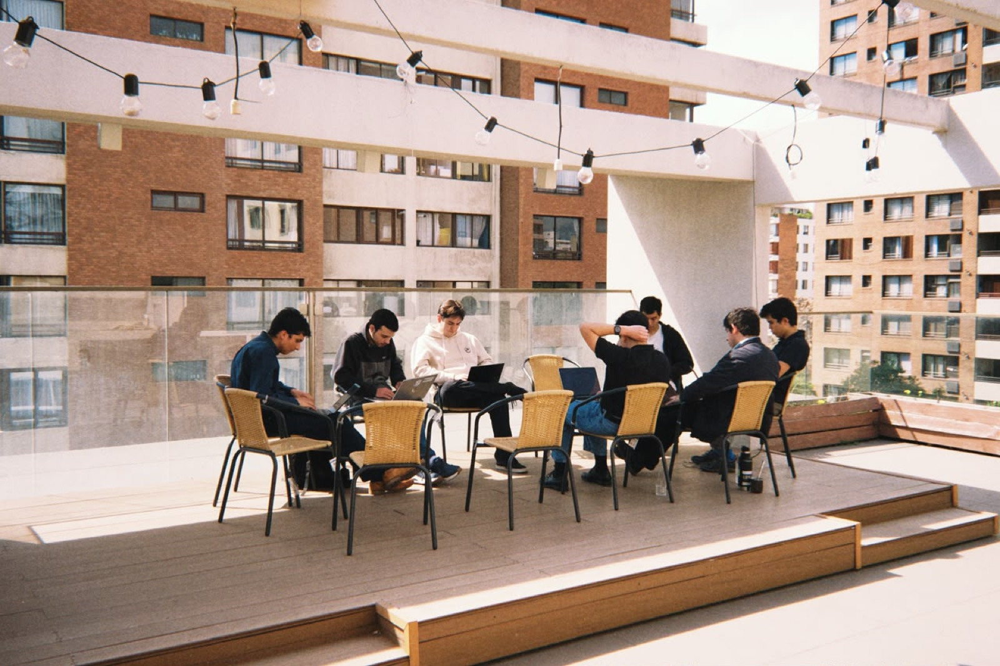
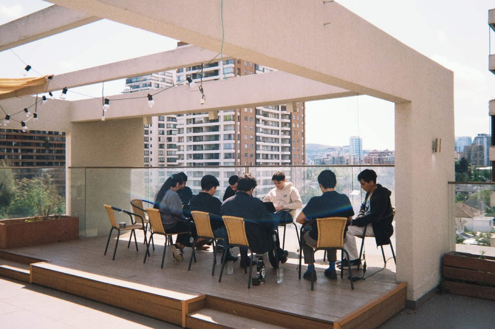
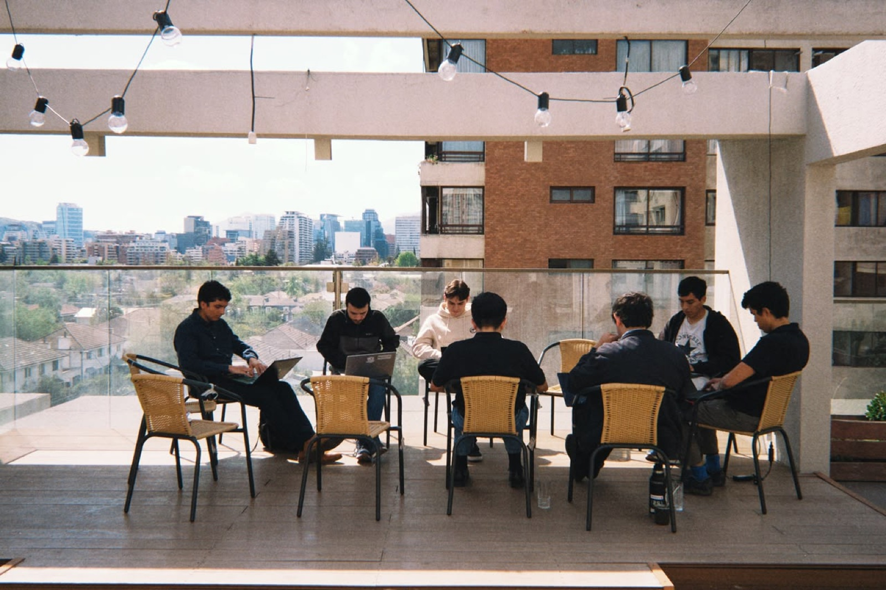
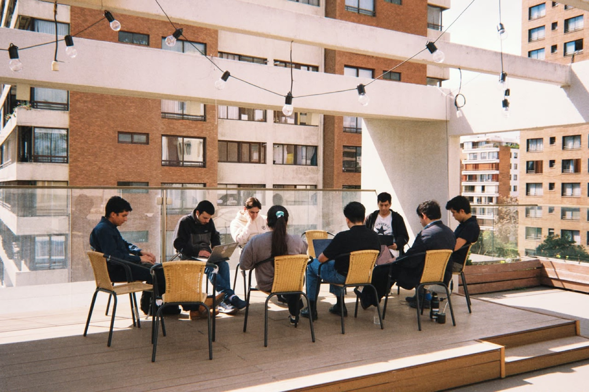
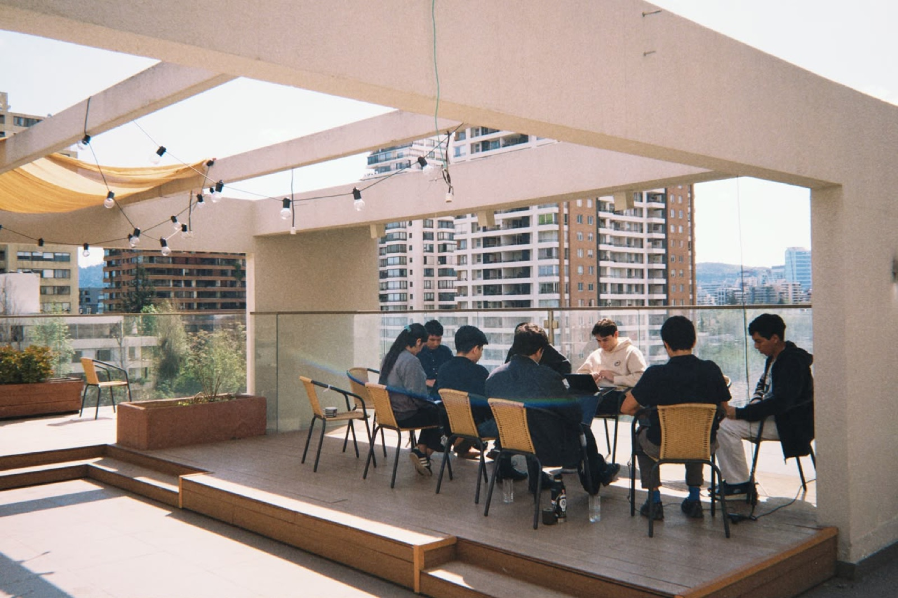
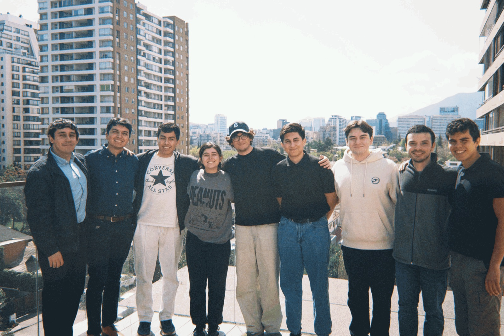

Estocolmo
Una terraza en Santiago. Diez sillas de mimbre, una guirnalda de ampolletas y gente construyendo cosas.






Una terraza en Santiago. Diez sillas de mimbre, una guirnalda de ampolletas y gente construyendo cosas.





